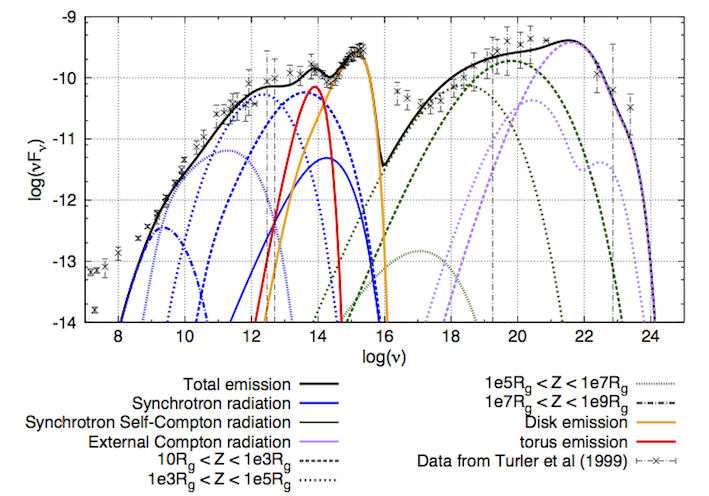

An Active Galactic Nuclei (AGN), is a compact object situated at the
center of a galaxy and showing very bright emission at some or at
every wavelengths. The only known phenomenon capable of producing
enough energy to explain such luminosities is the accretion of matter
on a supermassive black hole. One can as well observe relativistic
jets of sizes comparable to the one of the host galaxy. In models I am
interested in, the bright emission is directly due to these jets. My
work consists in describing the physical processes occuring in the jet
in order to explain and describe the observed emission.
High energy observations are particularly interesting in my work and
can be done by different telescopes: satellites observing in X-rays (XMM) and gamma rays (Fermi) or ground based telescopes, such as Cherenkov telescopes (HESS, CTA).

Picture of the galaxy NGC 4261 from Hubble archives.
On the left, a composit image of the galaxy NGC4261. Both jets coming from the central core are visible in radio. On the right, a zoom on the central core by the Hubble Space Telescope where we can see the accretion disk and the dusty torus.
Scheme of the central region extracted from Trevor C. Weekes, Very High Energy Gamma-Ray Astronomy
A lot of material (mainly gas and dust) gravitates around the central black-hole. The jet emanates from the central regions of the AGN, either from the ergosphere of the BH or from the accretion disc.
During my Ph.D. thesis, supervised by Gilles Henri and Pierre-Olivier
Petrucci at IPAG, I have worked on improving the two-flow model. In
this model, the jet is composed of two fluids:
- a MHD sheath midly relativistic and carrying most of the power
- an inner, highly relativstic, leptonic jet reponsible for the
non-thermal emission observed.
Sketch of the two-flow model.
I contributed to the development of a numerical model corresponding to the two-flow.
An important part of my work has been to find analytical and numerical approximations to increase the efficiency of the model and its usability in an acceptable computing time.
Interesting results include the study of the acceleration of the inner
jet via the Compton rocket. I showed that the complex photon field of
an AGN created by the accretion disc, the dusty torus and the broad
line region induce variation of the speed of the flow along the jet
(with acceleration and deceleration zones). These variations are
crucial as they can result in modulation of the emission in space and
in time.

Variations of the bulk Lorentz factor driven by Compton rocket effect along the jet.
In order to optimize the model on actual data, I had to develop an
optimization algorithm. I chose genetic algorithms for their ability
to deal with complex behavior in numerous dimensions.
Here is a little animation of an optimization of the model (orange
thick line) compared to data (crosses). Generation after generation,
the model improves itself by finding parameters that better fit the
data.

Fit of 3C 273 SED by the genetic algorithm GaJet I developed.

Modeling of 3C 273 by JetModel. The modeled SED fits 30 years of data from Turler et al. Different zones of the structured jet emit at different wavelengths, thus explaining the radiation from radio to gamma-rays.
{kind=link}
{kind=link}
{kind=link}